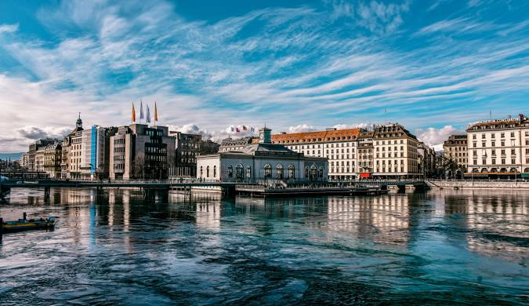

مطل جميل جداً في جنيف، يمتد لثمانية كيلومترات على الحدود الفرنسية مع جنيف، و يرتفع لمسافة 4410 متر. ستستمتع كثيرًا بمشاهدة مدينة جنيف و البحيرة الرائعة من الأعلى و جبال الألب و جبال جورا في منظر جميل من على قمة جبل ساليف. لا تعتقد أن زيارة التلفريك تقتصر فقط على متعة مشاهدة المناظر الخلابة، ففي ذلك المكان تتوفر مجموعة من المطاعم و المقاهي و العديد من الألعاب المناسبة للأطفال و الأنشطة الترفيهية، و أماكن للجلوس و الاستمتاع بالمناظر الجميلة من الأعلى. و يمكنك الوصول إلى مطل دو ساليف بإستقلال الباص العام رقم (8، 34، 41) من وسط جنيف إلى فييريير اكول أو فييريير دوانس، أو بالسيارة إلى محطة وادي التلفريك في فييريير.
هي أهم معلم سياحي و لا يخلو أي برنامج سياحي من جولة حول نافورة جنيف، و التي تعتبر واحدة من أعلى نوافير العالم، حيث ترتفع المياه منها حتى 140 متر، و تقذف حوالي 500 لتر ماء في الثانية، مما سيسهل عليك رؤيتها من جميع أنحاء جنيف. عادة ما تكون جولات النافورة تغطي جزءاً من بحيرة جنيف نفسها، و تختلف أسعار الجولات تبعاً لأنشطة و مدة و مقدم الجولة، لكن عادة ما تبلغ الجولة 69 فرنك للشخص. في المساء تكون النافورة في أجمل حالتها حيث تتزين بالأضواء الملونة.
مقابل النافورة يمكنك قضاء وقت ممتع في شاطىء جنيف، حيث تتواجد كراسي خاصة للاسترخاء على البحر، و مطعم و مقهى مميزين، كما يمكنك الاستمتاع بجلسة مساج صحية في الحمام التركي أو العربي أو الساونا المتواجدة قرب الشاطئ.
إذا قمت بزيارة ذلك المسرح، ستشعر أنك تزور دار الأوبرا في باريس، فهذا المسرح الذي تم انشاءه عام 1879، و ترميمه عام 1961، يعتبر من أكثر الأماكن جذبًا للسياح في جنيف. يمكنك أن تشاهد أجمل العروض، حيث يقدم المسرح مزيج من الموسيقى الكلاسيكية و الأوبرالية و المسرحيات و العروض الباليه، و أهم أعمال الأوبرا بمشاركة فنانين محليين و عالميين. غالبا ما تباع التذاكر على هيئة حزم تضم عدة عروض سوية، لذلك ننصحك بالانتباه جيداً عند شراء تذاكرك.
يعتبر نهر الرون واحد من أكبر أنهار أوروبا، و هو يمر عبر بحيرة جنيف و جنوب شرق فرنسا، و يبلغ طوله 812 كم، و ينبع من بحيرة جنيف في سويسرا، و يصب في البحر المتوسط و تحديدًا في جنوب شرق فرنسا. من أكثر الأنشطة الممتعة التي يجب ألا تفوتك في جنيف، هو القيام برحلة فى نهر الرون، حيث يمكنك الاستمتاع بمشاهدة أجمل المناظر الطبيعية، و مشاهدة الطيور التي تحلق فوق النهر، كما يمكنك ممارسة صيد الأسماك.
يعتبر ممشى مون بلان ملاذًا للباحثين عن المتعة في مدينة جنيف الصاخبة، حيث يمكنك المشي حول البحيرة و استئجار القوارب أو أخذ جولة بالباخرة في بحيرة جنيف. يعتبر من أجمل الأماكن في جنيف، و بالقرب منه الكثير من الأسواق و الفنادق و المطاعم و كذلك ساعة الزهور تقع في بداية الممشى بالقرب من جسر مون بلان.
تعتبر من الجولات المسلية جداً و خاصة إذا كانت مع
العائلة، ليمر القطار على عدة أماكن سياحية في كل جولة.
فندق فخم و يقع بمكان مميز على بحيرة جنيف “Lake Geneva“ و يقع فندق ذا ريتز كارلتون دي لا بييه قريب من مرسى القوارب و الجسر المؤدي إلى شارع التسوق في جنيف.
يعتبر فندق إن إتش مطار جنيف خيار مناسب إذا أردت قضاء ليلة في فندق قريب من مطار جنيف “Geneva Airport“، الفندق يبعد عن المطار 7 دقائق بالسيارة، الفندق يوفر خدمة التوصيل من و إلى المطار مجاناً تبدأ من الساعة 5:50 صباحاً و كل 20 دقيقة بعد هذا التوقيت، يوفر لك الفندق مجاناً بطاقة لك للتنقل بالمواصلات العامة، يبعد الفندق عن أقرب محطة ترام 600 متر تقريباً.
مانوتيل إن في واي ذو الخمس نجوم
رويال مانوتيل ذو أربع نجوم
وارويك جنيف ذو أربع نجوم
.webp)